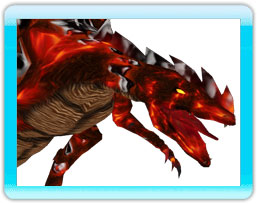

9 |
I Draghi |
 |
Susinuo - Signore Drago dell'Acqua Il Signore Drago dell'Acqua è il sovrano degli oceani. Di colore turchese, Susinuo ha sviluppato una coda a forma di larga spada e artigli reticolati. Dotato di quattro ali e un corpo lungo e flessibile, Susinuo è veloce ed agile. Susinuo e Jen
Unga - Signore Drago della Terra Forgiato dalle rocce e radici del mondo, il Signore Drago della Terra è il più grande e forte di tutti. Tuttavia, il suo peso fa sì che Unga sia il più lento nel volo, ma stabile e resistente. Difficilmente irritabile e poco sensibile, Unga è il più facile di tutti i Signori Draghi ad essere controllato. Elziath trova il vecchio Drago della Terra e saggiamente gli consiglia di aiutare i Signori Draghi e i loro discendenti a tornare ad essere gli elementi da cui erano generati. Il gentile gigante Unga è d'accordo che il tempo dei draghi è finito e che avrebbero fatto bene a ritornare in un luogo di pace, lontano dalle guerre degli uomini.
Pyrozian - Signore Drago del Fuoco Caratteristiche fisiche: Il piu' feroce di tutti i Signori Draghi, Pyrozian ha il temperamento del fuoco: pronto ad ardere di rabbia e il più difficile ad essere controllato. Nato dalla lava incandescente, questa enorme creatura dell'inferno possiede la più implacabile fiamma e la più imprevedibile natura. Pyrozian e Vourak Il fuoco lasciato inatteso cresce e distrugge ogni cosa e Pyrozian gode del caos generatosi. Vourak viaggia fino al vulcano di Pyrozian e sfida il Signore Drago a duello. Pyrozian accetta deliziato il pensiero della battaglia. Dopo una lunga lotta Vourak usa il Tomo della Fiamma per schiavizzare il feroce Signore Drago e adesso controlla questa potente creatura di distruzione.
Kullwaraith - Signore Drago della Tempesta
|
|||


 |
 |
 |